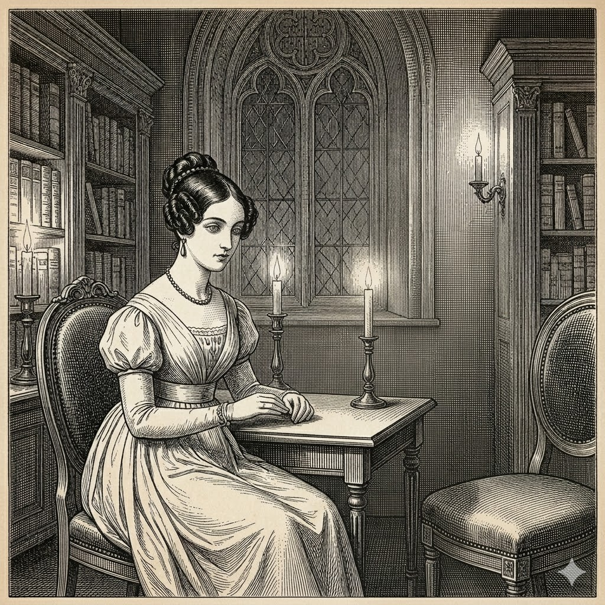
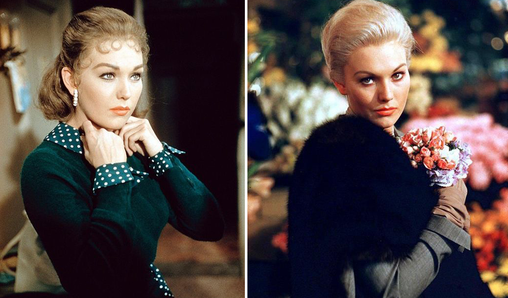
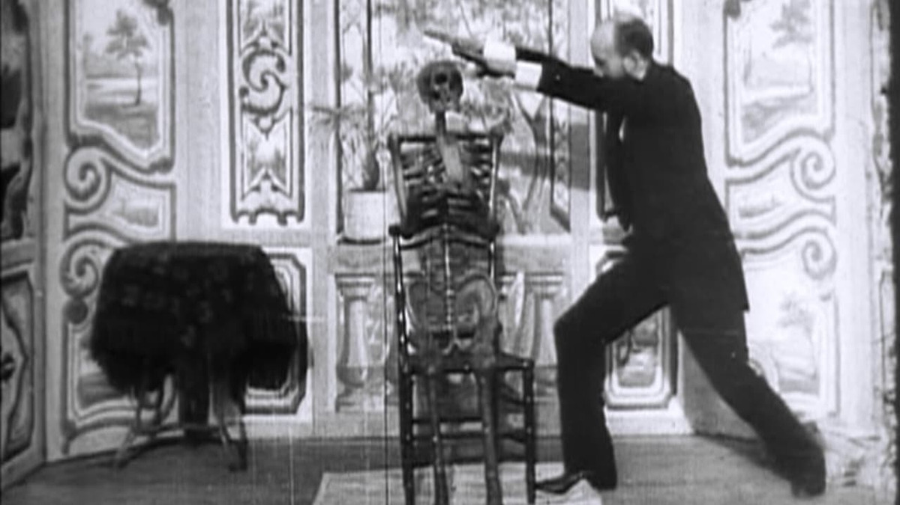
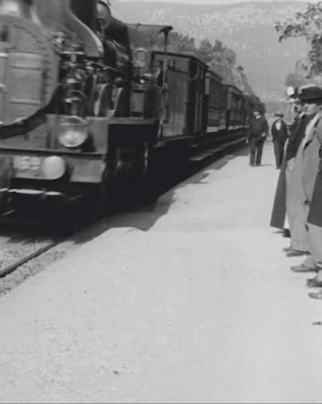

The theme of the human double or replica certainly has a long history in film and literature. The double may be artificial, created by a human agent (often the character of a “mad scientist” outside or beyond the scientific community), or the double may be another human, who bears an uncanny and often inexplicable resemblance to the main character. Both kinds of doubles are common in romantic and gothic literature of the nineteenth century. Widely known literary examples of natural or supernatural doubles include Poe’s William Wilson, Wilde’s The Picture of Dorian Gray, Stevenson’s Dr. Jekyll and Mr. Hyde, and in Russian literature Dostoevsky’s The Double. The artificial double with the greatest literary and cinematic influence is perhaps Mary Shelley’s Frankenstein. In the German romantic tradition, there is E.T.A. Hoffmann’s Der Sandmann and several other works. In most of these literary versions, the double is imperfect, less than human or in some disturbing or fantastical way different, and the differences are as much a part of the menace as the resemblance itself. All such doubles could be understood as literary forerunners of the roboticists’ attempts to get to the other side of the uncanny valley. Olimpia in Der Sandmann specifically reminds us of the efforts of one of the best-known roboticists today, Hiroshi Ishiguro, who worked for years on perfecting a young nubile robot named Erica.
The theme of the double passed easily over from literature to film, in some cases through direct adaptations. There are many versions and spinoffs of Frankenstein (beginning as early as 1910). In 1919 Ernst Lubitsch filmed Die Puppe (The Doll), a descendant of Hoffmann’s Der Sandmann by way of an operetta and a ballet by Délibes. But of course, many doubles in film are not directly literary adaptations. The 1950s paranoid classic, The Invasion of the Body Snatchers (1956) inspired three later versions as well as other films and TV series with similar themes. One of the most compelling recent supernatural double films is Jordan Peele’s Us (2019). The role of doubles—either doubles of the main character or of the significant female character—is also a familiar feature of the film noir and detective genres, for example, in Vertigo (1958), which bears intriguing parallels to Hoffmann.
The powerful literary tradition is certainly part of the explanation for film’s interest in uncanny doubles. But part of the explanation also lies in the nature of film itself as one of Benjamin’s technologies of mechanical reproduction. The association with the uncanny extends all the way back to the earliest films of the Lumière brothers and George Méliès. From the first, film was uncanny in that it seemed to reproduce the world even though its audience knew better. The story was told that at the first showing of The Arrival of a Train at La Ciotat Station in 1896, the audience feared that the train would actually pass through the screen and crush them. But the story should be understood not as an account of what happened, but rather as a kind of foundation myth. Tom Gunning argues that what the myth remembers is not naive fear in the audience, but a more sophisticated reaction, astonishment. The audience knew that they were watching a mediated experience, and yet what they saw on the screen looked more convincingly real than any earlier medium. The astonishment was the product of the gap between the visual experience and what the audience knew was possible.
As Richard Grusin argues:
This aesthetic of astonishment involves a contradictory response to the ontological status of moving photographic images, a response which tries to incorporate two contradictory beliefs or states of mind—the knowledge that one is sitting in a public theater watching an exhibition of a new motion picture technology and the feeling that what one is seeing on screen looks real.
The film pioneer George Méliès was also an owner and performer in a magic theater (Théâtre Robert-Houdin) in the late 19th century. One of his early films from 1896 (The Vanishing Lady) featured the trick of making the subject disappear and reappear through cinematic techniques rather than the trapdoor used in the theater. In other words, the audience for early film was prepared to receive this new technology as a new kind of magic that produced the same feeling of astonishment as the magic show.
The astonishment felt by early film audiences was a positive response to the uncanny resemblance between the filmed world and their experience of the physical world. For some, such as Maxim Gorky, who viewed early black and white silent film, the differences were more disturbing than the resemblance was pleasurable. The film showing reminded Gorky of all the elements of the daily experience that were missing: sound, color, and three-dimensionality.
Before you a life is surging, a life deprived of words and shorn of the living spectrum of colors—the gray, soundless, the bleak and dismal life. . . . It is terrifying to see, but it is the movement of shadows, only of shadows.
Gorky’s reaction shows how a feeling of the uncanny can arise precisely because of the gap between viewing the film and the lived experience of standing on a platform watching a train arrive, between the filmed train and the train itself. The gap must exist in order to arouse a reaction of pleasurable astonishment or anxiety, but it cannot be so large that the resemblance is lost. Gunning describes film’s own uncanny valley: “this asymptotic approach to the reproduction of life produces the effect of the uncanny and phantasmatic.” The mathematical term “asymptote” is appropriate, because by definition an asymptote approaches, but never reaches its target value.
In the twentieth century, film technology added the elements of sound and color that Gorky missed and improved in other ways, so that audiences today would certainly agree that a contemporary film is far more “realistic” than The Arrival of a Train at La Ciotat. But no audience of an IMAX film is fooled into thinking that the action is really happening before their eyes. It is because the viewers are at least subliminally aware of the gap that they can be astonished. We can therefore draw a distinction between the La Ciotat myth and the La Ciotat effect. The myth is that film could actually achieve the goal of reproducing the real. The La Ciotat effect is the pleasurable or anxious experience of the gap between film and the real. Film never overcame this uncanny valley. In fact, the La Ciotat effect is essential to film, but the effect could hardly exist without the myth that lies behind it.
Along with Benjamin’s notion of aura, Freud’s (1919) theory of the uncanny is also important for understanding the uncanny in film as well as CG and VR. Freud begins his analysis by noting that the word uncanny, in German unheimlich, has itself a rather uncanny semantic field and can sometimes become synonymous with the word heimlich, which ought to be its antonym meaning something like “homey.” Unheimlich in German carries connotations of both the secret/hidden and the familiar. The uncanny, Freud argues, has this double quality; it is the feeling that something is hiding beneath the surface, something both familiar and strange.
Filmic doubling substitutes our experience of viewing film for our experience of the real world. Mainstream film remains uncanny because it purports to be what we know it is not. Photorealism is often referred to as the “holy grail” of computer graphics, and many in the CG community seem almost obsessively preoccupied with developing and deploying new techniques to get beyond the uncanny valley.

Der Sandmann, E.T.A. Hoffmann Period engraving — public domain


Lumière Brothers, 1896 Public domain
Lumière Brothers, 1896 Public domain


“the movement of shadows, only of shadows”
Lumière Brothers, 1896 Public domain